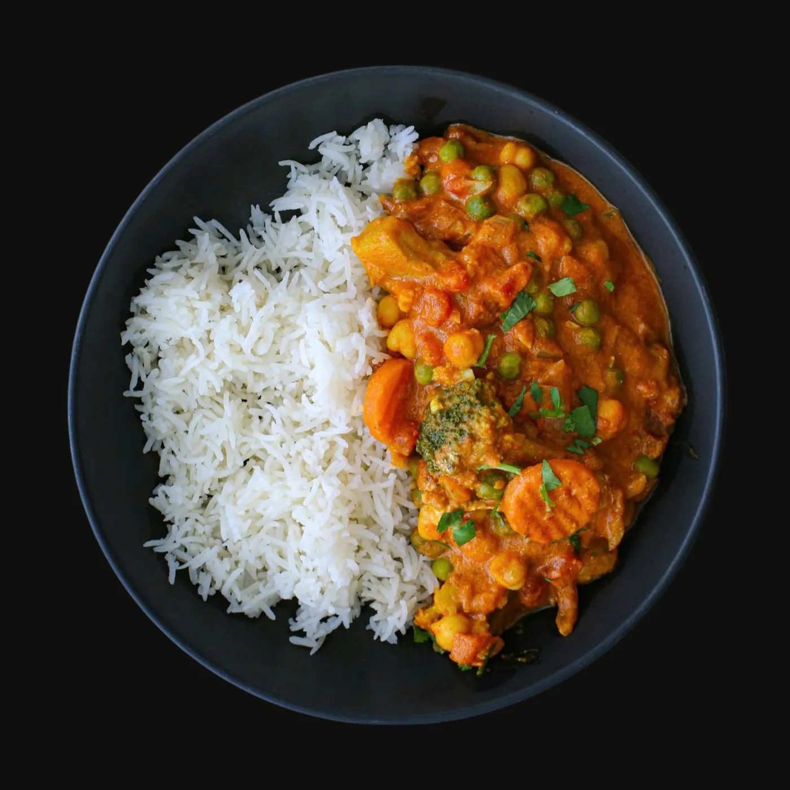

Chợ Lớn ClassicDetails ↗
Vegetable Curry with Coconut Milk
Seasonal vegetables in red coconut curry, served with jasmine rice.
Key ingredientsSeasonal vegetables in red coconut curry, served with jasmine rice.
Suggested pairingBạc Xỉu Sài Gòn